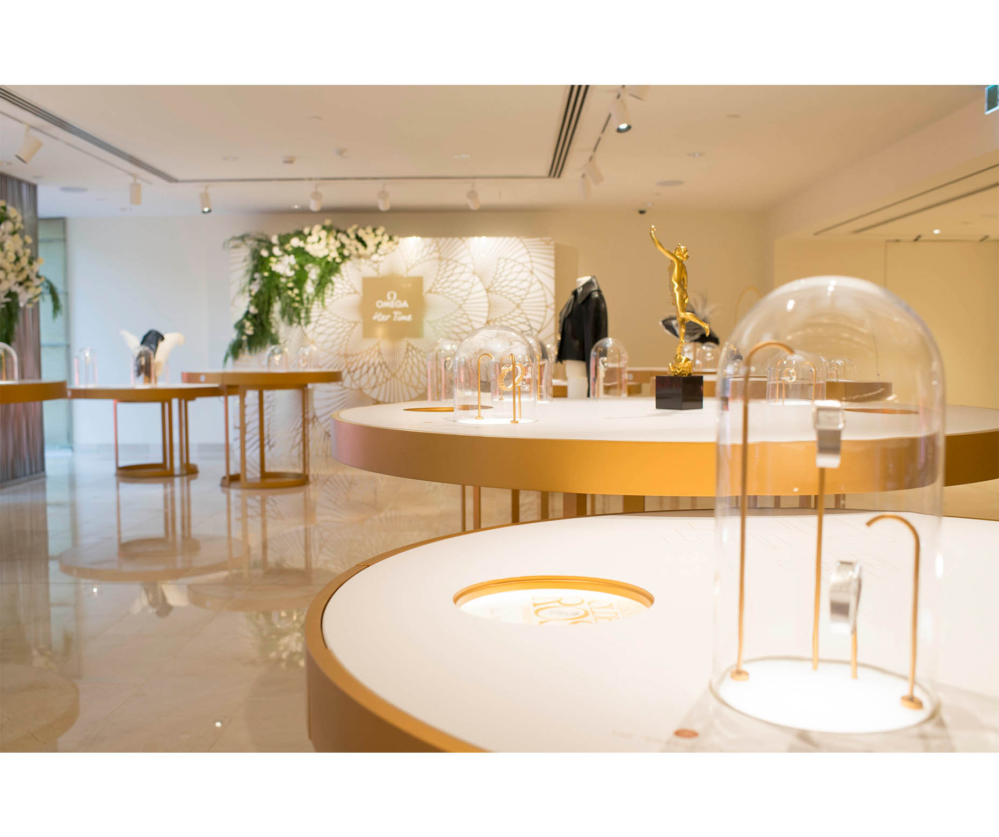

FOR WOMEN WHO LIVE EVERY SECOND
ONE TO WATCH
Cindy's "Her Time" Highlights
24 APRIL 2017
Following her special appearance at the opening of OMEGA's "Her Time" exhibition in Sydney, Cindy Crawford spent a few moments with us to talk about her favourite women's watches and how classic style never goes out of fashion.
The "Her Time" exhibition traces OMEGA's history of watchmaking for women over many years. Is there a particular era that inspires you? An era that perhaps you'd like to have lived through?I think I was most drawn to the art deco watches. The look of the 1930's is so stylish and glamourous. There was a real sense of fun and lots of exciting changes in fashion and music and more opportunities to travel. Of course it was also a difficult time for many people, but there were a lot of positive changes taking place, especially for women.
Was there a particular piece at the "Her Time" exhibition that caught your eye – and what was it that made it so special?For me it would have to be the “Flowers” wristwatch created for a watches and jewellery exhibition in the mid 50's. It has over 200 diamonds and is so delicate and beautiful. It's extremely rare - only 3 models were ever produced.
Has having some experience in the watch design process given you an insight into what the designers of those vintage watches were trying to achieve?Yes absolutely, I have a far better understanding of how difficult it is to balance the look of the watch with the technical aspects. It takes a lot of compromise and it really is a team effort. It's very exciting though, to see something in your imagination and have it come to life.
 There's a huge interest in vintage now; watches, clothes etc. Even among younger people. Why do you think that is?I think people are drawn to the timeless quality of vintage, that you just don't find in fashion made to wear for only one season. Also vintage clothing and jewellery tells a story and people love that idea of a long and interesting heritage behind what they wear.
These days, women's watches come in a variety of designs, from delicate and feminine to sporty; how important is the choice of watch in reflecting a woman's individual personality?It's very important and it's wonderful to have the choice of styles, not just to match individual personalities but to match different moods. After all, what you wear so often comes down to how you feel and that can change from day to day, even moment to moment.
YOU MIGHT ALSO ENJOY...

Blair Staky:
Founder of The Fox & She
An influencer of health and style, as well as a Speedmaster fan.


From OMEGA with love
Prepare to swoon, as our Valentine's Day timepiece and ring pairing is sure to turn your head and make your heart beat faster.